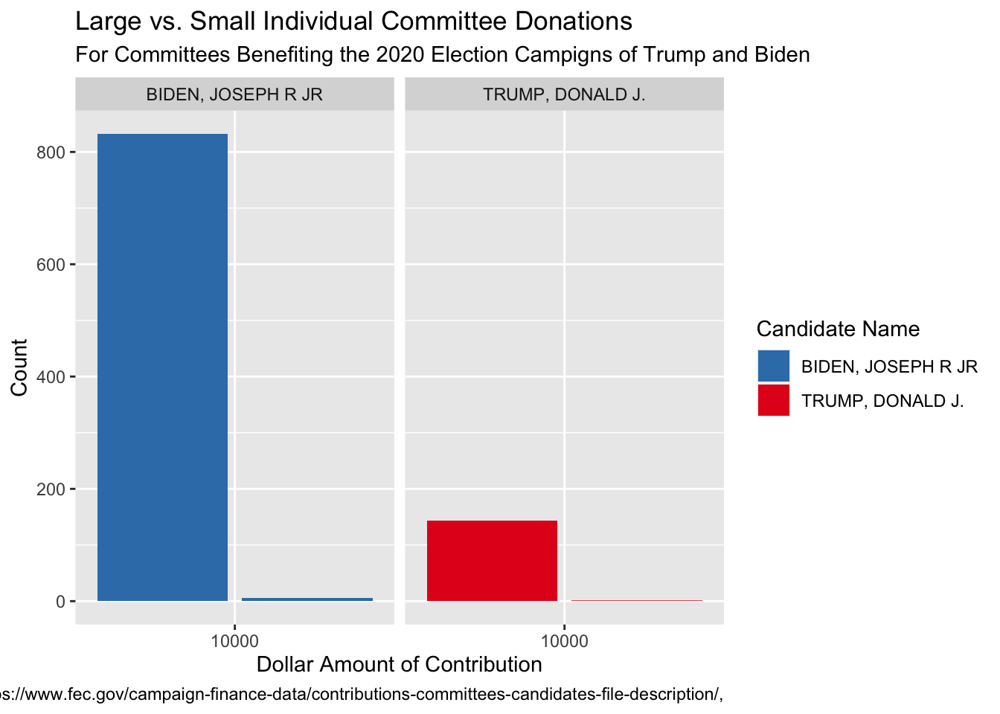

── Attaching core tidyverse packages ──────────────────────── tidyverse 2.0.0 ──
✔ dplyr 1.1.3 ✔ readr 2.1.4
✔ forcats 1.0.0 ✔ stringr 1.5.0
✔ ggplot2 3.4.3 ✔ tibble 3.2.1
✔ lubridate 1.9.2 ✔ tidyr 1.3.0
✔ purrr 1.0.2
── Conflicts ────────────────────────────────────────── tidyverse_conflicts() ──
✖ dplyr::filter() masks stats::filter()
✖ dplyr::lag() masks stats::lag()
ℹ Use the conflicted package (<http://conflicted.r-lib.org/>) to force all conflicts to become errors
library(fec20)
# Look at help file?contributions# Note that the contributions data frame only contains the first 1000 rows:contributions
# A tibble: 1,000 × 15
cmte_id amndt_ind rpt_tp transaction_pgi transaction_tp entity_tp name city
<chr> <chr> <chr> <chr> <chr> <chr> <chr> <chr>
1 C00694… N Q3 P2020 24K CCM DONA… NEW …
2 C00379… N M6 P2020 24K CCM CLEA… WASH…
3 C00694… N Q3 P2020 24K CCM DONA… NEW …
4 C00694… N Q3 P2020 24K CCM DONA… NEW …
5 C00694… N Q3 P2020 24K CCM MCSA… TUCS…
6 C00687… A M7 G2020 24E ORG AMER… ARLI…
7 C00585… N M8 P2020 24K CCM JAIM… RIDG…
8 C00428… N M9 P2020 24K CCM GREG… HELE…
9 C00064… N M7 G2020 24K CCM FREN… LITT…
10 C00694… N Q3 P2020 24K CCM JOHN… FARM…
# ℹ 990 more rows
# ℹ 7 more variables: state <chr>, zip_code <chr>, transaction_dt <date>,
# transaction_amt <dbl>, other_id <chr>, cand_id <chr>, tran_id <chr>
# Download full contributions data from web and overwrite contributions using:# read_all_*() function.# You will need to install the usethis package for this line of code to workcontributions <-read_all_contributions()
✔ Downloading from 'https://www.fec.gov/files/bulk-downloads/2020/pas220.zip'
✔ Download stored in '/var/folders/yr/6j4v2hy920538lc85np2l28m0000gn/T/RtmpVX4Kvs/pas220.zip'
✔ Unpacking ZIP file into 'pas220/' (1 files extracted)
✔ Deleting 'pas220.zip'
Rows: 0 Columns: 22
── Column specification ────────────────────────────────────────────────────────
Delimiter: ","
chr (22): CMTE_ID, AMNDT_IND, RPT_TP, TRANSACTION_PGI, IMAGE_NUM, TRANSACTIO...
ℹ Use `spec()` to retrieve the full column specification for this data.
ℹ Specify the column types or set `show_col_types = FALSE` to quiet this message.
# Now contributions has full 887,823 rowscontributions
# A tibble: 887,823 × 15
cmte_id amndt_ind rpt_tp transaction_pgi transaction_tp entity_tp name city
<chr> <chr> <chr> <chr> <chr> <chr> <chr> <chr>
1 C00567… T TER P2020 24K PAC TED … GAIN…
2 C00104… A TER G2020 24K CCM TEAM… COLU…
3 C00104… A TER P2022 24K CCM TIM … CHAR…
4 C00104… A TER P2020 24K CCM FRIE… COLU…
5 C00688… T TER G2018 24E ORG JACK… JACK…
6 C00414… N M2 P 24K CCM FRIE… ALEX…
7 C00325… N M2 P2020 24K CCM EMME… ANOKA
8 C00366… N M2 P2020 24K CCM MALO… NEW …
9 C00366… N M2 P2020 24K CCM MCHE… GAST…
10 C00366… N M2 P2020 24K CCM CITI… LONG…
# ℹ 887,813 more rows
# ℹ 7 more variables: state <chr>, zip_code <chr>, transaction_dt <date>,
# transaction_amt <dbl>, other_id <chr>, cand_id <chr>, tran_id <chr>
#Kat's work in below chunks---------
#making the data set smaller and filtering for relevant informationcondensed_contributions<-contributions|>select(transaction_tp, entity_tp, name, transaction_amt,cand_id)condensed_candidates<-candidates|>select(cand_id, cand_name, cand_pty_affiliation, cand_office)|>filter(cand_office=="P", cand_pty_affiliation%in%c("REP", "DEM"))#joining the data with some data from candidates to add the candidates' namescontributions2<-condensed_contributions|>inner_join(condensed_candidates,by=c("cand_id"))
#filtering for just Trump and Bidencontributions2<- contributions2|>filter(cand_id%in%c("P80001571","P80000722"))|>select(transaction_tp,entity_tp,name,transaction_amt,cand_id,cand_name)
#Recoding the names of transactions to be more reader-friendlycontributions2$transaction_tp<-recode(contributions2$transaction_tp,"24E"="In Favor","24K"="In Favor","24A"="Against","24C"="In Favor","24N"="Against","24F"="In Favor","24Z"="In Favor")
#This combines the multiple contributions made by one group so that the total amount contributed by one group is shown rather than every individual donation being shown differentlygroupcontributions<- contributions2|>group_by(transaction_tp, entity_tp, name, cand_name)|>summarize(total=sum(transaction_amt))
`summarise()` has grouped output by 'transaction_tp', 'entity_tp', 'name'. You
can override using the `.groups` argument.
#To see the total quantity contributed to and against Biden And Trump by organizations, this last summary move is completedsumcontributions<- groupcontributions|>group_by(transaction_tp, cand_name)|>summarize(total=sum(total))
`summarise()` has grouped output by 'transaction_tp'. You can override using
the `.groups` argument.
sumcontributions|>ggplot(aes(x=total, y=cand_name, fill=transaction_tp))+geom_col()+coord_flip()+labs(title="Total Contributed to Leading Candidates by Groups*",subtitle="*In this case, 'groups' refers to non-individuals, includingcommittees, candidates, candidate committees, PACs, individual contributions to committees, and organizations",x="Total (In USD)",y="Candidate",fill="Transaction",caption="Source:https://www.fec.gov/campaign-finance-data/contributions-committees-candidates-file-description/")+scale_fill_manual(values=c("#ab400c","#65995c"))
#checking if there are any IND values in our dataset contributions_condensed_ind <- condensed_contributions |>filter(entity_tp %in%c("IND")) glimpse(contributions_condensed_ind)
#Joining contributions with cand_id to match up Candidate names with Candidate IDs contributions3<-contributions|>inner_join(condensed_candidates,by=c("cand_id"))
#creating a dataframe of only IND values regardless of amount contributedcontributions3_ind <- contributions3 |>filter(entity_tp %in%c("IND")) glimpse(contributions_condensed_ind)
#filtering for contributions to Trump and Bidencontributions3_ind <- contributions3_ind |>filter(cand_name %in%c("BIDEN, JOSEPH R JR", "TRUMP, DONALD J."))
#selecting only for relevant columns contributions3_ind<- contributions3_ind|>select(transaction_tp, name, city, state, transaction_amt,cand_name)
#Recoding the names of transactions to be more reader-friendlycontributions3_ind$transaction_tp<-recode(contributions3_ind$transaction_tp,"24E"="In Favor","24K"="In Favor","24A"="Against")
#filtering for only contributions in favor of the candidatecontributions3_ind <- contributions3_ind |>filter(transaction_tp %in%c("In Favor"))
#doesn't work yet #replacing instances of double commas with a single comma contributions3_ind$name <- contributions3_ind$name |>str_replace_all(pattern =c(',,'=","))
#combining donors of the same name into one observation contributions3_ind_grouped<- contributions3_ind|>group_by(name, cand_name) |>summarise(total_amt =sum(transaction_amt))
`summarise()` has grouped output by 'name'. You can override using the
`.groups` argument.
#creating my data visualization contributions3_ind_grouped |>ggplot(aes(x=total_amt, fill = cand_name)) +geom_bar() +facet_wrap(vars(cand_name)) +scale_x_binned(n.breaks =3 ) +scale_fill_brewer(palette ="Set1", direction =-1) +labs(x ="Dollar Amount of Contribution", y ="Count",title ="Large vs. Small Individual Committee Donations",subtitle ="For Committees Benefiting the 2020 Election Campigns of Trump and Biden",fill ="Candidate Name",caption ="Source: https://www.fec.gov/campaign-finance-data/contributions-committees-candidates-file-description/," )

#counting the number of biden contributions vs trump contributions contributions3_ind_grouped |>group_by(cand_name) |>summarise(n =n() )
# A tibble: 2 × 2
cand_name n
<chr> <int>
1 BIDEN, JOSEPH R JR 838
2 TRUMP, DONALD J. 145
#BIDEN, JOSEPH R JR 838#TRUMP, DONALD J. 145
Blog post
The Federal Election Commission (FEC) is tasked with campaign finance regulation in all United States elections. Since a political donation was considered protected speech in the landmark 2010 Supreme Court case, Citizens United v. FEC, it is important to carefully record donations to ensure that they accord with existing restrictions. The contributions dataset contains records of 887,823 donations from groups including candidates, committees, and individuals donating to committees. The amount, type of transaction, donor’s name, city, state, zip code and recipient of the donation was also added. The question that we wanted to consider was: Based upon contributions from individuals to committees as well as any group (non-individual) to the two leading candidates in the 2020 election, is it possible to assess if one candidate was more widely disliked than the other, or if one candidate was more likely to receive certain amounts of financial support? Therefore, we decided to narrow down the data by focusing only on the 2020 Presidential General Election between Donald Trump and Joe Biden.
To first address the quantities and broad “types” of support (either in favor of or against) Trump and Biden, we created our first visualization. This data depicts all of the funds donated either to or against the Trump and Biden campaigns, having been cleaned and having had other candidates filtered out. The resulting visualization shows that Biden received more money in donations for his campaign than Trump did, appearing to be over double Trump’s amount. Additionally, Trump had more money spent against his campaign than Biden did, although the quantities are more similar than the quantities spent in favor. Essentially, Biden fared better with the so-called “group” donations than Trump did. However, it is important to note that the dataset used in making the visualization does not include any donations from individuals directly to either campaign, so it does not tell the entire story of the 2020 campaign donations. Thus, we cannot generalize about the donations of individuals directly to campaigns or the broader pattern of donation beyond those provided by organizations, committees, and other similar groups.
Our second visualization interrogates the donation amounts of individuals donating to committees in support of Trump and Biden’s 2020 campaigns. We divided donations into two bins, “small” donations (less than 10,000) and “large” donations. The resulting bar chart indicates that both candidates received far more small donations than large donations. This makes sense intuitively because it is unlikely that many Americans have the means to donate several thousand dollars to any one committee, regardless of how strongly they feel about the candidate. However, it appears that Biden received more large donations than Trump as well as far more donations from individuals donating to committees overall. This is potentially because our data did not include direct donations from individuals to candidates, which was included in the Individuals dataset. A possible explanation for the gap between Trump and Biden’s total donations is that Trump received more direct donations, but more data analysis is required for this to be confirmed.
Based upon both of our visualizations, it seems fair to conclude that Biden was better supported by organizations, committees, candidate committees, candidates, PACs, and individuals who donated to committees than Trump was. While we cannot make a decisive conclusion about whether one of the candidates was more likely to get larger vs smaller donations, we do see that Biden was more likely to get donations and had a higher total value of donations from the aforementioned groups. Additionally, since Trump got less money donated from individuals to committees favoring him and from groups as a whole, all in addition to having more money donated to oppose his election, it is reasonable to conclude that Trump was perhaps more widely disliked. Again, we cannot apply these generalizations to donations directly from individuals to the candidates, but the data supports our conclusion outside of that context. In general, Biden was more preferred than Trump within the previously established context. A possible ethical concern of joining data across data frames is that when using joins such as inner_join, there is a possibility that data will be omitted because it does not have a matching key in the other data frame. For example, when we joined the Candidates and Contributions data frames using Cand_id as our key, there is a possibility that there is a candidate without a candidate ID (perhaps a write-in candidate) that was not included in the joined table. When joining tables we must be careful that we don’t accidentally exclude important data points.